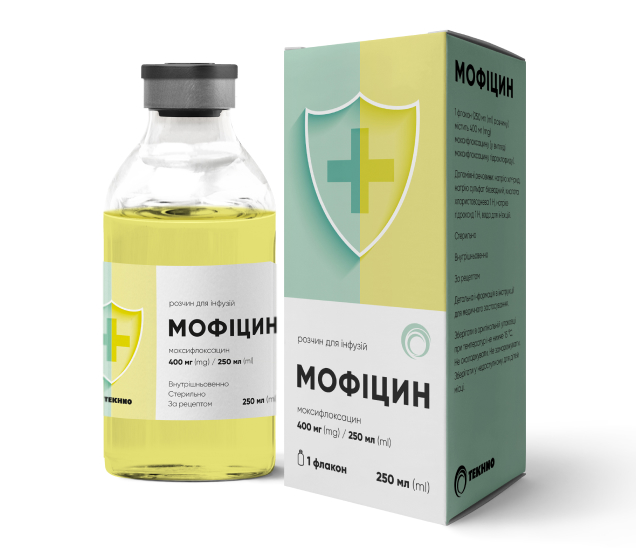

Мофіцин
- Діюча речовина: Антибактеріальні
- Форма випуску: Моксіфлоксацин 400 мг/250 мл
Мофіцин — протимікробний препарат для системного застосування.
Показання до застосування:
- Негоспітальна пневмонія.
- Ускладнені інфекційні захворювання шкіри та підшкірних тканин.
Інструкція
Мофіцин розчин д/інф. 400 мг/250 мл по 250 мл у флак.
Склад
діюча речовина: moxifloxacin; 1 флакон (250 мл розчину) містить 400 мг моксифлоксацину (у вигляді моксифлоксацину гідрохлориду); допоміжні речовини: натрію хлорид, натрію сульфат безводний, кислота хлористоводнева 1 Н, натрію гідроксид 1 Н, вода для ін’єкцій.
Лікарська форма
Розчин для інфузій. Основні фізико-хімічні властивості: прозорий, вільний від видимих частинок, зеленувато-жовтий розчин.
Фармакотерапевтична група
Протимікробні препарати для системного застосування. Антибактеріальні засоби групи хінолонів. Код АТХ J01M А14.
Фармакологічні властивості
Фармакодинаміка. Механізм дії. Моксифлоксацин пригнічує бактеріальні топоізомерази типу ІІ (ДНК-гіраза і топоізомераза IV), необхідні для реплікації, транскрипції та репарації бактеріальної ДНК. Фармакокінетика/фармакодинаміка. Здатність фторхінолонів знищувати бактерії безпосередньо залежить від їх концентрації. Фармакодинамічні дослідження фторхінолонів на тваринних моделях інфекційно-запальних захворювань та у людей свідчать, що
Мікробіологічна чутливість
Поширеність набутої резистентності виділених видів може варіюватися залежно від місцевості і часу, тому необхідна інформація про місцеву резистентність, особливо при лікуванні тяжких інфекцій. У разі необхідності слід звернутися за консультацією до спеціалістів, коли місцева поширеність резистентності набула такого рівня, що користь від застосування засобу, принаймні щодо деяких видів інфекцій, є сумнівною. Зазвичай чутливі види мікроорганізмів.
Аеробні грампозитивні мікроорганізми: Staphylococcus aureus* +, Streptococcus agalactiae (група B), Streptococcus milleri group* (S. anginosus, S. constellatus та S. intermedius), Streptococcus pneumoniae*, Streptococcus pyogenes* (група A), Streptococcus viridans група (S. viridans, S. mutans, S. mitis, S. sanguinis, S. salivarius, S. thermophilus). Аеробні грамнегативні мікроорганізми: Acinetobacter baumanii, Haemophilus influenzae*, Legionella pneumophila, Moraxella (Branhamella) catarrhalis*.
Анаеробні мікроорганізми: Prevotella spp. Інші мікроорганізми: Chlamydophila (Chlamydia) pneumoniae*, Coxiella burnetii, Mycoplasma pneumoniae*. Види, у яких можливий розвиток резистентності. Аеробні грампозитивні мікроорганізми: Enterococcus faecalis*, Enterococcus faecium*. Аеробні грамнегативні мікроорганізми: Enterobacter cloacae*, Escherichia coli* #, Klebsiella pneumoniae* #, Klebsiella oxytoca, Proteus mirabilis*. Анаеробні мікроорганізми: Bacteroides fragilis*.
Резистентні мікроорганізми
Аеробні грамнегативні мікроорганізми: Pseudomonas aeruginosa. * Ефективність достатньою мірою продемонстрована у клінічних дослідженнях. + Резистентний до метициліну S. aureus дуже часто є одночасно резистентним і до фторхінолонів. У метицилін-резистентних S. aureus рівень резистентності до моксифлоксацину становить понад 50 %. # Штами, які виробляють бета-лактамазу розширеного спектра (ESBL), є також резистентними до фторхінолонів.
Показання
Негоспітальна пневмонія. Ускладнені інфекційні захворювання шкіри та підшкірних тканин. Моксифлоксацин слід застосовувати тільки тоді, коли застосування інших антибактеріальних препаратів, які звичайно рекомендуються для початкового лікування цих інфекцій, є недоцільним. Слід враховувати офіційні рекомендації щодо належного застосування антибактеріальних засобів.
Протипоказання
Гіперчутливість до моксифлоксацину, інших антибіотиків групи хінолонів або будь-якої з допоміжних речовин. Період вагітності або годування груддю (див. розділ «Застосування у період вагітності або годування груддю»). Дитячий вік (до 18 років). Захворювання/патологія сухожиль в анамнезі, пов’язані із застосуванням хінолонів. Під час доклінічних та клінічних досліджень після введення моксифлоксацину спостерігалися зміни електрофізіологічних параметрів серцевої діяльності, що проявлялися подовженням інтервалу QT. З цієї причини моксифлоксацин протипоказаний пацієнтам із: - вродженим або набутим подовженням інтервалу QT; - порушенням балансу електролітів, особливо у випадку нескоригованої гіпокаліємії; - клінічно значущою брадикардією; - клінічно значущою серцевою недостатністю зі зниженням фракції викиду лівого шлуночка; - симптоматичними аритміями в анамнезі. Моксифлоксацин не можна одночасно застосовувати з препаратами, які подовжують інтервал QT (див. також розділ «Взаємодія з іншими лікарськими засобами та інші види взаємодій»). Через недостатній клінічний досвід застосування моксифлоксацин протипоказаний пацієнтам із порушенням функції печінки (клас С за класифікацією Чайлда — П’ю) та підвищенням рівнів трансаміназ у п’ять разів і більше.
Взаємодія з іншими лікарськими засобами та інші види взаємодії
Взаємодія з лікарськими засобами Не можна виключити адитивний ефект моксифлоксацину та інших лікарських засобів, що здатні викликати подовження інтервалу QTс. Цей ефект може призвести до розвитку шлуночкових аритмій, включаючи поліморфну шлуночкову тахікардію типу пірует. Із цієї причини застосування моксифлоксацину в комбінації з будь-яким із нижчезазначених лікарських засобів протипоказане (див. також розділ «Протипоказання»): - антиаритмічні лікарські засоби класу ІА (наприклад хінідин, гідрохінідин, дизопірамід); - антиаритмічні лікарські засоби класу ІІІ (наприклад аміодарон, соталол, дофетилід, ібутилід); - антипсихотичні лікарські засоби (наприклад фенотіазини, пімозид, сертиндол, галоперидол, сультоприд); - трициклічні антидепресанти; - деякі протимікробні засоби (саквінавір, спарфлоксацин, еритроміцин IV, пентамідин, протималярійні лікарські засоби, зокрема галофантрин); - деякі антигістамінні лікарські засоби (терфенадин, астемізол, мізоластин); - інші лікарські засоби (цизаприд, вінкамін IV, бепридил, дифеманіл). Моксифлоксацин слід з обережністю приймати пацієнтам, які застосовують лікарські засоби, що можуть знижувати рівень калію (наприклад петльові та тіазидні діуретики, проносні засоби та клізми (у високих дозах), кортикостероїди, амфотерицин В), або лікарські засоби, пов’язані з клінічно значущою брадикардією. Після багаторазового застосування моксифлоксацину у здорових добровольців спостерігалося збільшення Сmax дигоксину приблизно на 30 % без впливу на AUC чи рівень вказаної кривої. Під час досліджень за участю добровольців, хворих на діабет, одночасне застосування моксифлоксацину перорально і глібенкламіду призводило до зниження максимальної концентрації глібенкламіду у плазмі крові приблизно на 21 %. Комбінація глібенкламіду з моксифлоксацином теоретично може спровокувати розвиток незначної короткотривалої гіперглікемії. Однак відмічені зміни фармакокінетики глібенкламіду не викликали змін параметрів фармакодинаміки (рівень глюкози в крові, рівень інсуліну). Отже, клінічно значимої взаємодії між моксифлоксацином і глібенкламідом немає. Зміна значення міжнародного нормалізованого відношення (МНВ). Повідомлялося про велику кількість випадків збільшення активності пероральних антикоагулянтів у пацієнтів, які отримували протимікробні засоби, особливо фторхінолони, макроліди, тетрацикліни, котримоксазол та деякі цефалоспорини. Факторами ризику є інфекційні захворювання і запальний процес, вік і загальний стан пацієнта. У зв’язку з цим важко встановити, чим саме викликані зміни МНВ: інфекцією чи лікуванням. Як запобіжний захід, можна частіше перевіряти МНВ. За потреби слід провести належну корекцію дози перорального коагулянту. У клінічних дослідженнях для нижченаведених речовин була доведена відсутність клінічно значущої взаємодії з моксифлоксацином: ранітидин, пробенецид, пероральні контрацептиви, кальцієві добавки, морфін при парентеральному введенні, теофілін, циклоспорин або ітраконазол. Дослідження in vitro із застосуванням ферментів цитохрому Р450 людини підтвердили ці результати. Таким чином, метаболічна взаємодія через ферменти цитохрому Р450 є малоймовірною. Взаємодія з їжею Моксифлоксацин не виявляє клінічно значущої взаємодії з їжею, включаючи молочні продукти.